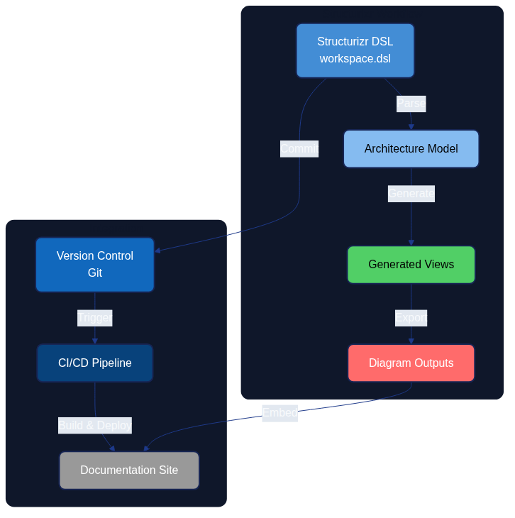

Structurizr: Architecture Modeling as Code

Structurizr enables architects to express system architecture through code using the C4 model, creating maintainable, version-controlled architecture diagrams that evolve alongside the systems they describe.
Introduction
Structurizr is a collection of tooling that enables software architecture to be defined as code using the C4 model (Context, Containers, Components, and Code). Created by Simon Brown, Structurizr addresses the fundamental challenge of keeping architecture documentation synchronized with reality by treating diagrams and models as artifacts generated from a single source of truth.
In the Architecture as Code ecosystem, Structurizr serves as a practical implementation tool that allows teams to:
- Define architecture models programmatically using a domain-specific language (DSL)
- Generate multiple diagram views from a single model
- Version control architecture definitions alongside application code
- Automate architecture documentation in CI/CD pipelines
- Maintain consistency across different architectural views
The open-source Architecture-as-Code (AaC) project offers a complementary example: its maintainers describe the toolkit as an open-source platform for modelling architecture definitions in YAML and automating validation and generation steps, with every capability delivered through discoverable plugins so teams can extend the CLI without modifying the core distribution (AaC Open Source Project). The plugin model demonstrates how DSL-driven approaches like Structurizr stay adaptable—domain teams can add generators, schema validators, or documentation exporters in the same fashion, keeping the architecture source of truth central whilst tailoring outputs to their needs.
This chapter explores how to use Structurizr for creating, developing, and handling architecture models, integrating them into modern development workflows, and establishing architecture as a living, evolving artifact.
The C4 Model Foundation
Before diving into Structurizr itself, understanding the C4 model is essential as it forms the conceptual foundation for all Structurizr work.
Four Levels of Abstraction
The C4 model provides a hierarchical approach to software architecture diagrams, organised across four levels:
| Level | Purpose | Audience | Abstraction |
|---|---|---|---|
| System Context | Illustrates how the software system in scope fits into its environment, highlighting users and neighbouring systems | Technical and non-technical stakeholders | People and software systems |
| Container | Zooms into the software system to show the high-level technology building blocks and how they collaborate | Architects, developers, and operations teams | Containers, data stores, and their responsibilities |
| Component | Decomposes a container to explain the components that fulfil its responsibilities and how they interact | Architects and developers | Components within a container |
| Code | Provides an optional view of how a component is implemented in code, such as classes, interfaces, or functions | Developers | Source code structures |
Brown's C4 Model guidance stresses that each successive level narrows the audience and scope so stakeholders can reason about the system using diagrams tailored to the detail they need, keeping the hierarchy consistent across teams.
Why C4 Works with Architecture as Code
The C4 model aligns naturally with Architecture as Code principles because:
- Hierarchical decomposition - Different stakeholders can view the architecture at appropriate levels of detail
- Technology agnostic - The model works regardless of programming languages or platforms
- Lightweight - Simple notation reduces cognitive overhead
- Composable - Views can be generated programmatically from a single model
Preventing diagram decay with automation
Brown (2022) describes "diagram decay" as the gradual divergence between architecture diagrams and the systems they represent when updates rely on manual effort. Structurizr's automated generation of C4 diagrams from a single, version-controlled model eliminates that manual gap: every change to the model regenerates the diagrams for the appropriate audience, whether leadership needs the System Context view or developers need Component detail. Embedding Structurizr rendering in CI pipelines, alongside Architecture as Code validation, ensures diagrams are rebuilt with each merge so teams catch drift early rather than allowing stale visuals to persist.
Structurizr DSL: Core Concepts
The Structurizr DSL (Domain-Specific Language) provides a text-based syntax for defining architecture models. Unlike graphical tools, the DSL approach enables version control, code review, and automation.
Basic Workspace Structure
Every Structurizr model begins with a workspace definition:
workspace "Architecture as Code Example" "Example architecture for demonstrating Structurizr" {
model {
# Define people, software systems, containers, and components here
}
views {
# Define which diagrams to generate from the model
}
configuration {
# Optional styling and rendering settings
}
}
Defining Model Elements
People and Software Systems
workspace "E-Commerce Platform" {
model {
# People (actors)
customer = person "Customer" "A person who purchases products from the platform"
admin = person "Administrator" "Internal staff managing the platform"
# Software Systems
ecommerce = softwareSystem "E-Commerce Platform" "Enables customers to browse and purchase products" {
# This is the system we're building
}
paymentGateway = softwareSystem "Payment Gateway" "Third-party payment processing" {
tags "External System"
}
# Relationships
customer -> ecommerce "Browses products, places orders"
ecommerce -> paymentGateway "Processes payments using"
admin -> ecommerce "Manages products and orders using"
}
views {
systemContext ecommerce "SystemContext" {
include *
autoLayout
}
}
}
This simple example creates a System Context diagram showing how users and external systems interact with the e-commerce platform.
Containers
Containers represent deployable units like web applications, mobile apps, databases, or microservices:
ecommerce = softwareSystem "E-Commerce Platform" {
webApp = container "Web Application" "Delivers content to customer browsers" "React" {
tags "Web"
}
apiGateway = container "API Gateway" "Provides API to web and mobile clients" "Node.js, Express" {
tags "API"
}
orderService = container "Order Service" "Manages order lifecycle" "Java, Spring Boot" {
tags "Microservice"
}
productService = container "Product Service" "Manages product catalog" "Python, FastAPI" {
tags "Microservice"
}
database = container "Database" "Stores product and order data" "PostgreSQL" {
tags "Database"
}
# Container relationships
webApp -> apiGateway "Makes API calls to" "HTTPS/JSON"
apiGateway -> orderService "Routes requests to" "gRPC"
apiGateway -> productService "Routes requests to" "REST/JSON"
orderService -> database "Reads from and writes to" "JDBC"
productService -> database "Reads from and writes to" "SQLAlchemy"
}
Components
Components represent logical building blocks within containers:
orderService = container "Order Service" {
orderController = component "Order Controller" "Handles HTTP requests for orders" "Spring MVC Controller"
orderRepository = component "Order Repository" "Provides access to order data" "Spring Data JPA"
paymentClient = component "Payment Client" "Integrates with payment gateway" "REST Client"
emailService = component "Email Service" "Sends order confirmation emails" "Spring Mail"
# Component relationships
orderController -> orderRepository "Uses"
orderController -> paymentClient "Uses"
orderController -> emailService "Uses"
orderRepository -> database "Reads/writes data" "JDBC"
}
Creating Views
Views define which diagrams Structurizr should generate from the model:
views {
# System Context diagram
systemContext ecommerce "SystemContext" {
include *
autoLayout lr
}
# Container diagram
container ecommerce "Containers" {
include *
autoLayout
}
# Component diagram for specific container
component orderService "OrderServiceComponents" {
include *
autoLayout
}
# Dynamic diagram showing interaction sequence
dynamic ecommerce "OrderPlacement" "Order placement flow" {
customer -> webApp "Places order"
webApp -> apiGateway "POST /api/orders"
apiGateway -> orderService "CreateOrder()"
orderService -> paymentGateway "ProcessPayment()"
orderService -> database "SaveOrder()"
orderService -> emailService "SendConfirmation()"
autoLayout
}
# Deployment diagram
deployment ecommerce "Production" "DeploymentProduction" {
deploymentNode "Customer Device" {
containerInstance webApp
}
deploymentNode "AWS Cloud" {
deploymentNode "ECS Cluster" {
containerInstance apiGateway
containerInstance orderService
containerInstance productService
}
deploymentNode "RDS" {
containerInstance database
}
}
}
}
Styling and Themes
Structurizr allows customisation of diagram appearance:
views {
styles {
element "Person" {
shape person
background #08427b
colour #ffffff
}
element "Software System" {
background #1168bd
colour #ffffff
}
element "External System" {
background #999999
colour #ffffff
}
element "Container" {
background #438dd5
colour #ffffff
}
element "Component" {
background #85bbf0
colour #000000
}
element "Database" {
shape cylinder
}
relationship "Relationship" {
routing orthogonal
thickness 2
}
}
themes https://static.structurizr.com/themes/default/theme.json
}
Workspace Configuration and Management
Workspace Types
Structurizr supports different deployment models:
- Structurizr Cloud - SaaS offering with hosted workspace
- Structurizr On-Premises - Self-hosted installation
- Structurizr Lite - Local viewer for DSL files (free, no server required)
Using Structurizr Lite for Development
Structurizr Lite is ideal for development and CI/CD integration:
# Run Structurizr Lite using Docker
docker run -it --rm -p 8080:8080 \
-v $(pwd)/workspace:/usr/local/structurizr \
structurizr/lite
This launches a local web server where you can view diagrams generated from your DSL files.
File Organisation
Organise Structurizr files alongside your codebase:
project/
├── docs/
│ └── architecture/
│ ├── workspace.dsl # Main architecture definition
│ ├── views/ # Exported diagrams (PNG, SVG)
│ └── README.md # Architecture documentation
├── src/ # Application source code
└── .github/
└── workflows/
└── architecture-docs.yml # CI/CD for architecture
Multi-File Workspaces
For large projects, split the model across multiple files:
# workspace.dsl
workspace "Large System" {
!docs docs
!adrs adrs
model {
!include model/people.dsl
!include model/systems.dsl
!include model/containers.dsl
}
views {
!include views/system-context.dsl
!include views/containers.dsl
!include views/deployment.dsl
!include views/styles.dsl
}
}
# model/people.dsl
customer = person "Customer"
admin = person "Administrator"
support = person "Support Agent"
# model/systems.dsl
mainSystem = softwareSystem "Main System" {
!include containers/web-app.dsl
!include containers/api-gateway.dsl
!include containers/services.dsl
}
externalPayment = softwareSystem "Payment Provider" {
tags "External"
}
Governance Patterns for Enterprise Workspaces
Sustaining expansive workspaces demands routine guardrails so that dozens of contributors can evolve diagrams without introduci ng drift. The following sequence keeps Structurizr DSL repositories predictable and reviewable:
- Define a domain folder structure – Create
model/domains/<domain>.dslfiles for each major capability (for example,pa yments.dsl,catalogue.dsl,governance.dsl). These files declare people, software systems, and containers that belong to th e same functional area. - Aggregate with intent-revealing include files – Introduce thin aggregators such as
model/core.dslormodel/external.d slthat simply list!includestatements. The main workspace file then references the aggregators, keeping the top-levelmod el {}block short and navigable, as demonstrated in the Structurizr DSL Language Reference. - Enforce naming conventions centrally – Store canonical tags and naming prefixes in
configuration { properties { ... } }a nd shared include files. For instance, prefix container identifiers with their bounded context (e.g.payments_api) and suffix view k eys with the chapter number (PaymentsContainers06). Reviewers can spot deviations instantly because every file uses the same include. - Document relationship expectations – Maintain a
docs/STRUCTURIZR_GUIDELINES.md(or similar) that states how to phrase rel ationship descriptions (“uses”, “publishes events to”, “reads from”). Link the document from pull request templates so contribu tors confirm adherence before review. - Leverage Structurizr Lite for validation – Encourage contributors to load the workspace in Structurizr Lite during development. Lite persists layout updates alongside the DSL, enabling contributors to visualise c onvention breaches before they reach code review.
These steps modularise the workspace whilst making naming policies transparent, preventing accidental duplication of actors or s ervices when multiple programmes collaborate.
Automated Layout Templates, Quality Gates, and Versioning
Automation protects diagram fidelity and keeps layout choices consistent as models expand. Combine DSL includes with Structuriz r CLI scripts to enforce standards:
- Reusable layout templates – Extract shared layout instructions into dedicated files and include them in every view. For ex ample:
structurizr
# views/layouts/standard-container-layout.dsl
autoLayout lr rankSeparation 450 columnSeparation 350
paperSize A3_Landscape
structurizr
container ecommerce "Containers" {
include *
!include views/layouts/standard-container-layout.dsl
}
Every view inherits the same orientation and spacing without relying on manual dragging in the editor.
- Quality gates in CI/CD – Add a lightweight shell script to fail builds when conventions slip:
```bash #!/usr/bin/env bash set -euo pipefail
workspace="docs/architecture/workspace.dsl" output_dir="build/structurizr"
structurizr.sh validate -workspace "$workspace" structurizr.sh export -workspace "$workspace" -format structurizr -output "$output_dir"
jq -e 'all(.workspace.model.containers[]?.name; test("^[A-Z][A-Za-z]+(\u0020[A-Z][A-Za-z]+)* API$"))' \ "$output_dir/workspace.json" ```
The example checks that container names end with “API” and start with capitalised words; adapt the regular expression to your
organisation. Additional jq queries can assert that required tags or documentation URLs are present before the pipeline mark
s the change as ready.
- Diagram versioning – Commit exported Structurizr JSON alongside the DSL to preserve layout history. Because
structurizr.s h exportwrites deterministic coordinates,git diffhighlights when layout templates change or when an element moves. Tying the JSON revision to release tags gives architecture reviewers a linear history of diagram evolution that complements the DSL b lend of automation and narrative.
These automation techniques build upon the enablement practices described later in Chapter 24, letting platform engineers execu te Chapter 06 guidance through reproducible tooling.
Team Enablement and Adoption Playbook
Scaling Structurizr beyond a single maintainer requires deliberate enablement so that architecture automation becomes a shared capability rather than a heroic effort. Combine the following rhythms with the people-development patterns in Chapter 24 to spread ownership:
- Foundational bootcamps – Run a recurring two-hour workshop that walks through the reference workspace, highlights the module structure described above, and demonstrates how Structurizr Lite and the CLI complement one another. Recording each session helps global teams revisit the material asynchronously.
- Pair-modelling rotations – Assign monthly pairs that include one experienced maintainer and one new contributor. Each pair triages backlog items, applies naming policies, and raises any missing automation hooks. Rotations prevent tacit knowledge from concentrating in a single geography or department.
- Checklists in pull request templates – Extend pull request templates with explicit Structurizr checks ("Ran
structurizr.sh validate, updated layout template includes, attached before/after screenshots from Lite"). Contributors self-attest to these tasks, and reviewers can focus on architectural intent instead of procedural reminders. - Capability metrics – Track lead time for diagram updates, the number of contributors editing the workspace each quarter, and the percentage of views using the shared layout templates. Publish these metrics alongside the broader enablement dashboards introduced in Chapter 24 to spotlight where additional coaching is required.
- Community of practice – Host a monthly forum where teams share lessons, propose adjustments to the naming conventions, and experiment with new Structurizr DSL features referenced in the official documentation. Capture agreed changes in the guidelines repository so the knowledge persists beyond the meeting.
This cadence keeps Structurizr maintainers embedded within a wider community, reducing the risk of bottlenecks and reinforcing the book’s emphasis on collaborative architecture stewardship.
Reference Workspace for Architecture Teams
To accelerate onboarding, the repository now ships with a curated Structurizr workspace that mirrors the C4 abstractions descri
bed throughout this chapter. You can find the canonical definition in docs/examples/structurizr/aac_reference_workspace.dsl, w
ith supporting guidance in docs/examples/structurizr/README.md.
Repository artefacts
- Workspace DSL – Implements System Context, Container, Component, Dynamic, and Deployment views for the Architecture as Co de platform, providing a ready-made baseline for teams to copy or extend.
- Styling conventions – Applies consistent British English tagging and a colour palette that emphasises governance, automat ion, and telemetry pathways referenced in the book.
- Configuration metadata – Pins a minimum Structurizr CLI version so that exports remain reproducible across developer machi nes and the CI pipeline.
Exploring the reference workspace
Follow these steps to render the workspace locally:
- Install the Structurizr CLI (version
2024.03.01or later). - From the repository root, run:
bash structurizr.sh export \ -workspace docs/examples/structurizr/aac_reference_workspace.dsl \ -format plantuml,mermaid,structurizr - Open the exported diagrams or load the generated Structurizr Lite workspace to explore the interactive views.
These commands align with the automation demonstrated earlier in this chapter, ensuring that developers, architects, and editor s can iterate confidently without bespoke tooling.
Contribution workflow for diagram updates
A consistent contribution workflow prevents diagram drift and preserves traceability across programmes:
- Create a feature branch – Prefix it with
structurizr/to signal architecture-oriented work. - Amend the DSL – Update
aac_reference_workspace.dslor add modular!includefiles in the same directory. Each change s hould retain the C4 hierarchy and respect agreed tags. - Validate locally – Execute
structurizr.sh validate -workspace docs/examples/structurizr/aac_reference_workspace.dslfol lowed by the export command above. Address any reported warnings before requesting review. - Document intent – Capture the architectural rationale in the pull request description and, where relevant, reference rela ted Architecture Decision Records.
- Run the book build –
python3 generate_book.py && docs/build_book.shensures that downstream artefacts (including PNG di agrams referenced in the manuscript) remain in sync. - Request dual review – Tag at least one platform engineer and one product architect so that automation and domain perspect ives both evaluate the change.
- Check automation outcomes – Confirm that GitHub Actions architecture checks and the main book build succeed before mergin g.
By following these steps, teams maintain a shared, version-controlled architecture narrative that evolves alongside the software delivery platform.
Integration with CI/CD Pipelines
Automating architecture documentation ensures diagrams stay synchronized with code changes.
GitHub Actions Example
name: Architecture Documentation
on:
push:
branches: [main]
paths:
- 'docs/architecture/**'
- 'src/**'
pull_request:
paths:
- 'docs/architecture/**'
jobs:
generate-diagrams:
runs-on: ubuntu-latest
steps:
- uses: actions/checkout@v4
- name: Validate Structurizr DSL
uses: docker://structurizr/cli:latest
with:
args: validate -w docs/architecture/workspace.dsl
- name: Export Diagrams
uses: docker://structurizr/cli:latest
with:
args: export -w docs/architecture/workspace.dsl -f plantuml -o docs/architecture/views
- name: Generate PNG from PlantUML
uses: docker://plantuml/plantuml:latest
with:
args: -tpng -o $(pwd)/docs/architecture/views docs/architecture/views/*.puml
- name: Commit Updated Diagrams
if: github.ref == 'refs/heads/main'
run: |
git config user.name "Architecture Bot"
git config user.email "architecture@example.com"
git add docs/architecture/views/*.png
git diff --quiet && git diff --staged --quiet || \
git commit -m "Update architecture diagrams [skip ci]"
git push
GitLab CI Example
architecture-documentation:
image: structurizr/cli:latest
stage: documentation
script:
- structurizr validate -w docs/architecture/workspace.dsl
- structurizr export -w docs/architecture/workspace.dsl -f plantuml -o output/
artifacts:
paths:
- output/
only:
changes:
- docs/architecture/**
- src/**
Validation in Pull Requests
Prevent architecture drift by validating changes:
name: Architecture Validation
on:
pull_request:
paths:
- 'docs/architecture/**'
jobs:
validate:
runs-on: ubuntu-latest
steps:
- uses: actions/checkout@v4
- name: Validate DSL Syntax
run: |
docker run --rm -v $(pwd):/workspace \
structurizr/cli validate -w /workspace/docs/architecture/workspace.dsl
- name: Check for Undocumented Components
run: |
# Custom script to verify all services have architecture representation
python scripts/validate-architecture-coverage.py
- name: Generate Diff Preview
run: |
# Generate diagrams from base and head branches for comparison
docker run --rm -v $(pwd):/workspace \
structurizr/cli export -w /workspace/docs/architecture/workspace.dsl \
-f png -o /workspace/preview/
Practical Implementation Patterns
Pattern 1: Microservices Architecture
workspace "Microservices Platform" {
model {
user = person "User"
platform = softwareSystem "Microservices Platform" {
gateway = container "API Gateway" "Routes and authenticates requests" "Kong" {
tags "Infrastructure"
}
group "Core Services" {
userService = container "User Service" "Manages user accounts" "Node.js"
authService = container "Auth Service" "Handles authentication" "Node.js"
notificationService = container "Notification Service" "Sends notifications" "Python"
}
group "Business Services" {
orderService = container "Order Service" "Processes orders" "Java"
inventoryService = container "Inventory Service" "Manages inventory" "Go"
paymentService = container "Payment Service" "Processes payments" "Java"
}
group "Data Layer" {
userDb = container "User Database" "User data" "PostgreSQL"
orderDb = container "Order Database" "Order data" "PostgreSQL"
inventoryDb = container "Inventory Database" "Inventory data" "MongoDB"
}
messageBus = container "Message Bus" "Async communication" "RabbitMQ" {
tags "Infrastructure"
}
}
# Relationships
user -> gateway "Makes requests"
gateway -> userService "Routes /users/*"
gateway -> orderService "Routes /orders/*"
gateway -> authService "Validates tokens"
userService -> userDb "Reads/writes"
orderService -> orderDb "Reads/writes"
inventoryService -> inventoryDb "Reads/writes"
orderService -> messageBus "Publishes OrderCreated"
inventoryService -> messageBus "Subscribes to OrderCreated"
notificationService -> messageBus "Subscribes to events"
}
views {
container platform "MicroservicesContainer" {
include *
autoLayout
}
dynamic platform "OrderFlow" {
user -> gateway "POST /orders"
gateway -> authService "ValidateToken"
gateway -> orderService "CreateOrder"
orderService -> orderDb "SaveOrder"
orderService -> messageBus "Publish OrderCreated"
messageBus -> inventoryService "OrderCreated event"
inventoryService -> inventoryDb "ReserveItems"
messageBus -> notificationService "OrderCreated event"
notificationService -> user "Send confirmation"
autoLayout
}
}
}
Pattern 2: Event-Driven Architecture
workspace "Event-Driven System" {
model {
producer = softwareSystem "Event Producer" "Generates domain events"
eventStore = softwareSystem "Event Store" "Stores event stream" {
tags "Database"
}
consumer1 = softwareSystem "Read Model Service" "Builds read models"
consumer2 = softwareSystem "Analytics Service" "Analyzes events"
consumer3 = softwareSystem "Notification Service" "Sends notifications"
producer -> eventStore "Appends events to"
eventStore -> consumer1 "Streams events to"
eventStore -> consumer2 "Streams events to"
eventStore -> consumer3 "Streams events to"
}
views {
systemContext eventStore "EventDrivenContext" {
include *
autoLayout
}
}
}
Pattern 3: Multi-Tenant SaaS
workspace "Multi-Tenant SaaS" {
model {
tenant1 = person "Tenant 1 Users"
tenant2 = person "Tenant 2 Users"
saas = softwareSystem "SaaS Platform" {
frontend = container "Web App" "Customer interface" "React"
api = container "API Layer" "Multi-tenant API" "Node.js" {
tenantMiddleware = component "Tenant Middleware" "Identifies tenant from request"
tenantResolver = component "Tenant Resolver" "Resolves tenant configuration"
}
# Separate schemas per tenant
tenant1Db = container "Tenant 1 Database" "Isolated tenant data" "PostgreSQL"
tenant2Db = container "Tenant 2 Database" "Isolated tenant data" "PostgreSQL"
sharedDb = container "Shared Database" "Tenant configuration" "PostgreSQL"
}
tenant1 -> frontend "Uses"
tenant2 -> frontend "Uses"
frontend -> api "API calls with tenant ID"
api -> sharedDb "Reads tenant config"
api -> tenant1Db "Reads/writes (Tenant 1)"
api -> tenant2Db "Reads/writes (Tenant 2)"
}
views {
container saas "MultiTenantArchitecture" {
include *
autoLayout
}
component api "TenantIsolation" {
include *
autoLayout
}
}
}
Advanced Features
Filtered Views
Show different perspectives of the same model:
views {
# Show only external dependencies
container platform "ExternalDependencies" {
include platform
include ->platform->
include platform->
exclude "element.tag==Internal"
autoLayout
}
# Security-focused view
container platform "SecurityView" {
include "element.tag==Security"
include "element.type==Person"
include ->element.tag==Security->
autoLayout
}
}
Model Perspectives
Add supplementary information without cluttering diagrams:
orderService = container "Order Service" {
perspectives {
"Security" "Requires JWT authentication, RBAC for order access"
"Performance" "Target: 100ms p95 latency, 1000 req/s throughput"
"Cost" "~$500/month in AWS (2 ECS tasks + RDS instance)"
"Compliance" "Stores PII, requires GDPR compliance"
}
}
Documentation Sections
Embed markdown documentation within the workspace:
workspace {
!docs docs
model {
# ... model definition
}
}
Then create docs/ folder with markdown files:
docs/
├── 01-overview.md
├── 02-architecture-decisions.md
├── 03-deployment.md
└── 04-operations.md
Architecture Decision Records (ADR) Integration
workspace {
!adrs adrs
model {
# Model elements can reference ADRs
}
}
Structure:
adrs/
├── 0001-use-microservices.md
├── 0002-event-sourcing-for-orders.md
└── 0003-postgresql-for-primary-storage.md
Best Practices
1. Single Source of Truth
Store the DSL file in version control alongside code:
✅ Good:
repository/
├── src/
├── docs/architecture/workspace.dsl
└── README.md
❌ Bad:
- DSL in one repository, code in another
- Diagrams manually created and stored as images
2. Automate Diagram Generation
Never manually edit generated diagrams:
# Automated
on:
push:
paths: ['docs/architecture/**']
jobs:
generate:
steps:
- run: structurizr export ...
3. Use Meaningful Identifiers
# Good - clear, readable identifiers
userService = container "User Service"
orderService = container "Order Service"
# Bad - cryptic identifiers
us = container "User Service"
os = container "Order Service"
4. Tag Strategically
Tags enable filtering and styling:
container "API" {
tags "Backend" "REST API" "Critical Path"
}
container "Legacy System" {
tags "Legacy" "Deprecated" "Scheduled for Retirement"
}
5. Keep Views Focused
# Good - focused view
container platform "CoreServices" {
include "element.tag==Core"
autoLayout
}
# Bad - everything in one view
container platform "Everything" {
include *
# Too cluttered to be useful
}
6. Document Relationships
orderService -> paymentGateway "Processes payments using" "HTTPS/REST" {
tags "External Integration" "PCI-DSS Scope"
}
7. Use Implied Relationships
Structurizr automatically creates implied relationships:
# When component A -> container B, and container B belongs to system C,
# Structurizr implies: component A -> system C (at higher abstraction levels)
# This keeps models DRY while generating appropriate diagrams at each level
8. Version Control Everything
# Track all architecture artifacts
git add docs/architecture/workspace.dsl
git add docs/architecture/views/*.png
git commit -m "Add payment service to architecture model"
9. Review Architecture Changes Like Code
Require pull request reviews for architecture changes:
# .github/CODEOWNERS
docs/architecture/** @architecture-team
10. Keep Models Synchronized
# Script to verify architecture coverage
def verify_architecture_coverage():
"""Ensure all microservices are documented in Structurizr"""
# Parse services from code
actual_services = discover_services_from_code()
# Parse services from Structurizr DSL
documented_services = parse_structurizr_model()
missing = actual_services - documented_services
if missing:
raise Exception(f"Undocumented services: {missing}")
Comparison with Other Tools
Structurizr vs. Traditional Diagramming Tools
| Aspect | Structurizr | Draw.io / Visio | Lucidchart |
|---|---|---|---|
| Version Control | ✅ Native (text files) | ⚠️ Binary files | ⚠️ Cloud-based versioning |
| Code Review | ✅ Standard Git workflows | ❌ Difficult | ❌ Not supported |
| Automation | ✅ CLI and API | ❌ Manual | ⚠️ Limited API |
| Single Source of Truth | ✅ Model generates views | ❌ Each diagram separate | ❌ Each diagram separate |
| Learning Curve | ⚠️ Moderate (DSL syntax) | ✅ Low (drag-drop) | ✅ Low (drag-drop) |
| Consistency | ✅ Enforced by model | ❌ Manual effort | ❌ Manual effort |
| Cost | ✅ Free (Lite) or subscription | ✅ Free or one-time purchase | 💰 Subscription |
Structurizr vs. PlantUML
| Aspect | Structurizr | PlantUML |
|---|---|---|
| Focus | Software architecture (C4) | Various diagram types |
| Abstraction Levels | ✅ Built-in (C4 hierarchy) | ⚠️ Manual management |
| Layout Control | ⚠️ Limited (auto-layout) | ✅ More granular |
| Model Reuse | ✅ Single model, multiple views | ❌ Each diagram separate |
| Syntax | ✅ Architecture-specific DSL | ⚠️ Generic diagramming |
| Tooling | ✅ Dedicated tools (Lite, Cloud) | ✅ Wide tool support |
| Learning Curve | ✅ Lower for C4 | ⚠️ Steeper syntax |
Structurizr vs. Mermaid
| Aspect | Structurizr | Mermaid |
|---|---|---|
| C4 Model Support | ✅ Native, comprehensive | ⚠️ Basic C4 support |
| Diagram Types | Architecture-focused | Wide variety (flowcharts, etc.) |
| GitHub Integration | ⚠️ Requires export | ✅ Native rendering |
| Model Consistency | ✅ Single model enforces | ❌ Separate diagrams |
| Interactive Viewers | ✅ Structurizr Lite/Cloud | ⚠️ Limited |
| Documentation | ✅ Integrated docs/ADRs | ❌ Separate |
| Best Use Case | Complex architecture models | Quick, simple diagrams |
Recommendation Matrix
| Scenario | Recommended Tool | Rationale |
|---|---|---|
| Large-scale system architecture | Structurizr | Model consistency, C4 hierarchy, architecture focus |
| Quick diagrams in README | Mermaid | GitHub native support, simple syntax |
| Detailed sequence diagrams | PlantUML | Rich sequence diagram features |
| Non-technical stakeholder presentations | Lucidchart/Draw.io | Familiar interface, easy customisation |
| Architecture as Code practice | Structurizr | Native version control, automation support |
Common Challenges and Solutions
Challenge 1: Layout Control
Problem: Auto-layout doesn't always produce ideal diagrams.
Solutions:
# 1. Specify layout direction
views {
container platform {
autoLayout lr # left-to-right
# or: tb (top-bottom), bt (bottom-top), rl (right-left)
}
}
# 2. Use manual positioning (when needed)
views {
container platform {
include *
# Manual coordinates (x, y)
element webApp 100 100
element apiGateway 300 100
element database 500 100
}
}
# 3. Export to PlantUML for fine-tuning
$ structurizr export -w workspace.dsl -f plantuml
# Then adjust PlantUML layout directives
Challenge 2: Large Models Become Complex
Problem: Single workspace file becomes unwieldy.
Solution: Split into multiple files
workspace {
model {
!include model/people.dsl
!include model/external-systems.dsl
!include model/platform/api-layer.dsl
!include model/platform/services.dsl
!include model/platform/data-layer.dsl
}
views {
!include views/context.dsl
!include views/containers.dsl
!include views/components/*.dsl
!include views/deployment.dsl
}
}
Challenge 3: Keeping Model Synchronized with Reality
Problem: Code evolves but architecture model becomes stale.
Solution: Automated validation
# ci/validate-architecture.py
import requests
import yaml
def get_running_services():
"""Query service registry for deployed services"""
registry = requests.get("http://service-registry/api/services")
return {s["name"] for s in registry.json()}
def parse_structurizr_containers():
"""Extract container names from DSL"""
with open("docs/architecture/workspace.dsl") as f:
content = f.read()
# Parse DSL (simplified)
containers = set()
for line in content.split("\n"):
if "container" in line.lower():
# Extract container name
containers.add(extract_name(line))
return containers
def validate():
running = get_running_services()
documented = parse_structurizr_containers()
undocumented = running - documented
if undocumented:
raise Exception(f"Services missing from architecture: {undocumented}")
deprecated = documented - running
if deprecated:
print(f"Warning: Documented but not running: {deprecated}")
if __name__ == "__main__":
validate()
Challenge 4: Team Adoption
Problem: Developers unfamiliar with DSL syntax.
Solutions: 1. Provide templates
# templates/new-service.dsl
newService = container "SERVICE_NAME" "DESCRIPTION" "TECHNOLOGY" {
tags "Microservice" "Backend"
# Add components here
}
# Relationships
apiGateway -> newService "Routes requests"
newService -> database "Reads/writes"
- Create documentation
# Adding a New Service to Architecture
1. Copy `templates/new-service.dsl`
2. Replace placeholders (SERVICE_NAME, DESCRIPTION, TECHNOLOGY)
3. Add to main workspace: `!include model/services/your-service.dsl`
4. Run validation: `make validate-architecture`
5. Commit and create PR
- Provide VS Code extension - Use Structurizr DSL extension for syntax highlighting and validation
Challenge 5: Diagram Aesthetics
Problem: Generated diagrams don't match brand guidelines.
Solution: Custom themes
views {
styles {
element "Person" {
shape person
background #FF6B35 # Brand colour
colour #FFFFFF
fontSize 24
}
element "Container" {
background #004E89 # Brand colour
colour #FFFFFF
fontSize 18
shape roundedbox
}
element "Database" {
shape cylinder
background #1A1A2E # Brand colour
}
relationship "Relationship" {
thickness 3
colour #004E89
routing curved # or: orthogonal, direct
fontSize 14
}
}
# Or use external theme
themes https://example.com/company-theme.json
}
Real-World Example: Complete E-Commerce Platform
Here's a comprehensive example bringing together all the concepts:
workspace "E-Commerce Platform" "Complete architecture for online retail" {
!docs docs
!adrs adrs
model {
# People
customer = person "Customer" "Online shopper"
merchant = person "Merchant" "Seller managing products"
admin = person "Administrator" "Platform operator"
# External Systems
paymentProvider = softwareSystem "Payment Provider" "Stripe/PayPal" {
tags "External System"
}
emailService = softwareSystem "Email Service" "SendGrid" {
tags "External System"
}
shippingCarrier = softwareSystem "Shipping Carrier" "FedEx/UPS API" {
tags "External System"
}
# Main Platform
ecommercePlatform = softwareSystem "E-Commerce Platform" {
# Frontend Layer
webApp = container "Web Application" "Customer-facing storefront" "React, Next.js" {
tags "Frontend" "Critical Path"
productCatalog = component "Product Catalog" "Browse and search products"
shoppingCart = component "Shopping Cart" "Manage cart items"
checkout = component "Checkout" "Order placement flow"
}
mobileApp = container "Mobile App" "iOS and Android apps" "React Native" {
tags "Frontend" "Mobile"
}
adminPanel = container "Admin Panel" "Merchant and admin interface" "Vue.js" {
tags "Frontend" "Internal"
}
# API Layer
apiGateway = container "API Gateway" "Authenticates and routes requests" "Kong, Node.js" {
tags "Infrastructure" "Critical Path"
authMiddleware = component "Auth Middleware" "JWT validation"
rateLimiter = component "Rate Limiter" "Throttles requests"
router = component "Router" "Routes to services"
}
# Core Services
group "Core Domain Services" {
productService = container "Product Service" "Product catalog management" "Java, Spring Boot" {
tags "Microservice" "Core"
productController = component "Product Controller" "REST API"
productRepository = component "Product Repository" "Data access"
searchService = component "Search Service" "Elasticsearch integration"
}
orderService = container "Order Service" "Order lifecycle management" "Java, Spring Boot" {
tags "Microservice" "Core" "Critical Path"
orderController = component "Order Controller" "REST API"
orderRepository = component "Order Repository" "Data access"
orderStateMachine = component "Order State Machine" "Manages order states"
perspectives {
"Security" "PII data, requires encryption at rest"
"Compliance" "GDPR compliance, 30-day data retention"
}
}
inventoryService = container "Inventory Service" "Stock management" "Go" {
tags "Microservice" "Core"
}
userService = container "User Service" "User account management" "Node.js" {
tags "Microservice" "Core"
}
}
# Supporting Services
group "Supporting Services" {
paymentService = container "Payment Service" "Payment processing" "Python, FastAPI" {
tags "Microservice" "PCI-DSS"
perspectives {
"Security" "PCI-DSS scope, no card data storage"
"Compliance" "PCI-DSS Level 1 certified"
}
}
notificationService = container "Notification Service" "Email and SMS notifications" "Python" {
tags "Microservice"
}
recommendationService = container "Recommendation Service" "Product recommendations" "Python, TensorFlow" {
tags "Microservice" "ML"
}
}
# Data Layer
group "Data Stores" {
productDb = container "Product Database" "Product catalog data" "PostgreSQL" {
tags "Database" "Primary Storage"
}
orderDb = container "Order Database" "Order data" "PostgreSQL" {
tags "Database" "Primary Storage"
}
userDb = container "User Database" "User profiles and auth" "PostgreSQL" {
tags "Database" "Primary Storage"
}
searchIndex = container "Search Index" "Product search" "Elasticsearch" {
tags "Database" "Search"
}
cache = container "Cache" "Session and data cache" "Redis" {
tags "Database" "Cache"
}
}
# Infrastructure
messageBus = container "Message Bus" "Event-driven communication" "RabbitMQ" {
tags "Infrastructure" "Messaging"
}
# Relationships - Frontend to Gateway
webApp -> apiGateway "API calls" "HTTPS/JSON"
mobileApp -> apiGateway "API calls" "HTTPS/JSON"
adminPanel -> apiGateway "API calls" "HTTPS/JSON"
# Relationships - Gateway to Services
apiGateway -> productService "Routes /products/*" "HTTP/REST"
apiGateway -> orderService "Routes /orders/*" "HTTP/REST"
apiGateway -> userService "Routes /users/*" "HTTP/REST"
# Relationships - Services to Databases
productService -> productDb "Reads/writes" "JDBC"
productService -> searchIndex "Indexes products" "HTTP"
orderService -> orderDb "Reads/writes" "JDBC"
userService -> userDb "Reads/writes" "JDBC"
inventoryService -> productDb "Updates stock" "JDBC"
# Relationships - Services to Cache
productService -> cache "Caches products" "Redis Protocol"
userService -> cache "Caches sessions" "Redis Protocol"
# Relationships - Async via Message Bus
orderService -> messageBus "Publishes OrderCreated" "AMQP"
messageBus -> inventoryService "OrderCreated event" "AMQP"
messageBus -> notificationService "OrderCreated event" "AMQP"
paymentService -> messageBus "Publishes PaymentCompleted" "AMQP"
}
# External Integrations
ecommercePlatform -> paymentProvider "Processes payments" "HTTPS/REST"
ecommercePlatform -> emailService "Sends emails" "HTTPS/REST"
ecommercePlatform -> shippingCarrier "Creates shipments" "HTTPS/REST"
# User Interactions
customer -> webApp "Browses and purchases"
customer -> mobileApp "Browses and purchases"
merchant -> adminPanel "Manages products"
admin -> adminPanel "Platform administration"
# Production Deployment
deploymentEnvironment "Production" {
deploymentNode "AWS Cloud" {
tags "AWS"
deploymentNode "CloudFront CDN" {
containerInstance webApp
}
deploymentNode "ECS Cluster" {
tags "Container Orchestration"
deploymentNode "API Gateway Tasks" {
containerInstance apiGateway
}
deploymentNode "Service Tasks" {
instances 3
containerInstance productService
containerInstance orderService
containerInstance userService
containerInstance inventoryService
containerInstance paymentService
containerInstance notificationService
}
}
deploymentNode "RDS" {
tags "Managed Database"
deploymentNode "Primary" {
containerInstance productDb
containerInstance orderDb
containerInstance userDb
}
deploymentNode "Read Replicas" {
instances 2
}
}
deploymentNode "ElastiCache" {
containerInstance cache
}
deploymentNode "Elasticsearch Service" {
containerInstance searchIndex
}
deploymentNode "Amazon MQ" {
containerInstance messageBus
}
}
}
}
views {
# System Context
systemContext ecommercePlatform "SystemContext" {
include *
autoLayout lr
description "High-level view showing how the e-commerce platform fits in the ecosystem"
}
# Container View
container ecommercePlatform "Containers" {
include *
autoLayout tb
description "Container-level architecture showing major applications and data stores"
}
# Core Services Focus
container ecommercePlatform "CoreServices" {
include element.tag==Core
include element.tag==Database
include element.tag==Infrastructure
autoLayout
description "Focus on core domain services"
}
# Component View - Product Service
component productService "ProductServiceComponents" {
include *
autoLayout
description "Internal structure of Product Service"
}
# Component View - Order Service
component orderService "OrderServiceComponents" {
include *
autoLayout
description "Internal structure of Order Service"
}
# Dynamic View - Order Flow
dynamic ecommercePlatform "OrderPlacementFlow" {
title "Customer Order Placement"
customer -> webApp "1. Submits order"
webApp -> apiGateway "2. POST /api/orders"
apiGateway -> orderService "3. CreateOrder()"
orderService -> orderDb "4. SaveOrder()"
orderService -> messageBus "5. Publish OrderCreated"
messageBus -> inventoryService "6. OrderCreated event"
inventoryService -> productDb "7. Reserve items"
messageBus -> paymentService "8. OrderCreated event"
paymentService -> paymentProvider "9. Charge customer"
paymentService -> messageBus "10. Publish PaymentCompleted"
messageBus -> notificationService "11. PaymentCompleted event"
notificationService -> emailService "12. Send confirmation"
emailService -> customer "13. Confirmation email"
autoLayout
description "Sequence of events when customer places order"
}
# Deployment View
deployment ecommercePlatform "Production" "ProductionDeployment" {
include *
autoLayout
description "Production deployment on AWS"
}
# Filtered Views
container ecommercePlatform "ExternalIntegrations" {
include element.tag==External*
include ->element.tag==External*->
autoLayout
description "External system dependencies"
}
container ecommercePlatform "DataLayer" {
include element.tag==Database
include ->element.tag==Database->
autoLayout
description "Data storage architecture"
}
# Styling
styles {
element "Person" {
shape person
background #08427b
colour #ffffff
fontSize 22
}
element "Software System" {
background #1168bd
colour #ffffff
shape roundedbox
}
element "External System" {
background #999999
colour #ffffff
}
element "Container" {
background #438dd5
colour #ffffff
shape roundedbox
}
element "Component" {
background #85bbf0
colour #000000
shape component
}
element "Database" {
shape cylinder
background #438dd5
}
element "Infrastructure" {
shape hexagon
}
element "Frontend" {
background #ff6b6b
}
element "Core" {
background #51cf66
}
element "Critical Path" {
border solid
thickness 4
}
relationship "Relationship" {
thickness 2
colour #707070
routing orthogonal
fontSize 12
}
}
themes https://static.structurizr.com/themes/default/theme.json
}
configuration {
scope softwaresystem
}
}
Integration with Architecture Decision Records
Structurizr integrates naturally with ADRs documented in Chapter 4:
# Project structure
docs/
├── architecture/
│ ├── workspace.dsl
│ └── adrs/
│ ├── 0001-use-microservices.md
│ ├── 0002-event-driven-integration.md
│ ├── 0003-postgresql-for-services.md
│ └── 0004-kong-api-gateway.md
Reference ADRs in the workspace:
workspace {
!adrs docs/architecture/adrs
model {
apiGateway = container "API Gateway" {
url https://github.com/org/repo/blob/main/docs/architecture/adrs/0004-kong-api-gateway.md
}
}
}
This creates traceability from architecture elements to the decisions that shaped them.
Conclusion
Structurizr represents a powerful implementation of Architecture as Code principles, enabling teams to:
- Define architecture models programmatically using a clear, version-controlled DSL
- Generate consistent diagrams from a single source of truth
- Integrate architecture documentation into standard development workflows
- Automate validation that architecture matches reality
- Maintain living documentation that evolves with the system
The C4 model provides the conceptual framework, while Structurizr DSL offers the practical tooling to implement it. By treating architecture as code, teams can apply the same rigorous practices—version control, code review, automated testing, CI/CD—to their architectural work as they do to application development.
While there's a learning curve to master the DSL syntax and modeling concepts, the investment pays dividends through improved architecture consistency, team collaboration, and documentation quality. Combined with the practices covered in earlier chapters (ADRs, version control, automation), Structurizr enables a comprehensive Architecture as Code workflow.
The next chapters explore how to extend these foundations into containerisation and orchestration, where architecture definitions can directly inform deployment and operational patterns.
Sources
- Brown, S. "The C4 model for visualising software architecture." https://c4model.com
- Brown, S. "Documenting Software Architecture with Structurizr." Structurizr Blog, 2022. https://blog.structurizr.com/diagrams-as-code-automation/
- Structurizr. "Structurizr DSL Language Reference." https://github.com/structurizr/dsl
- Structurizr. "Structurizr Lite." https://structurizr.com/help/lite
- Brown, S. "Documenting Software Architecture with Structurizr." Structurizr Blog, 2022.
- Brown, S. "Software Architecture for Developers." Leanpub, 2024.
- ThoughtWorks Technology Radar. "Diagrams as code." https://www.thoughtworks.com/radar/techniques/diagrams-as-code
- AaC Open Source Project. "Architecture-as-Code Repository." https://github.com/aacplatform/aac